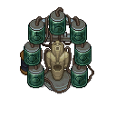
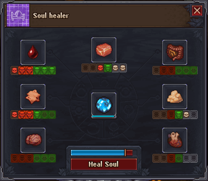

Soul healer
| This article is a stub. You can help Graveyard Keeper Wiki by expanding it. |
| Soul healer | |
|---|---|
 | |
Basic information
| |
Required Technology :
|
None |
Rotatable :
|
False |
Location(s)
| |
| Souls room | |

The Soul healer is a workbench introduced with the Better Save Soul DLC, that may be built in the Souls room after the Soul extractor is repaired. The Soul healer allows you to use body parts to heal a Harmed soul.
When a Harmed soul is successfully healed, it will generate a Healed soul and some Sin Shards based on the number of body parts used. Each Harmed soul requires a different combination of body parts and their qualities, to increase the chance of a successful healing. If a Harmed soul is not preserved in a Soul container, it will rapidly deteriorate and turn into a Sin shard. Considering that healing a Harmed soul harvests a greater amount of Sin shards, it is not advisable to let Harmed souls deteriorate.
The Soul healer can work with any unmodified body parts, but maxing out an organ's Red skulls and White skulls through the Organ Workbench will give the best healing results. The body parts do not degrade from use, and can in fact be used indefinitely. Extensions to the Soul healer must be crafted to unlock the 6 remaining organ slots, which in turn are unlocked through the Spiritualism technology tree using soul gratitude and the standard blue, red and green points.
If a Healed soul is not preserved in a Soul container, it will slowly deteriorate and turn into a Sin Shard, just like its Harmed counterpart. This can be used as a technique for harvesting Sin shards when Soul Gratitude is unneeded.
Interface



The interface of a fully upgraded Soul Healer with partially upgraded organs and a damaged soul.
The interface of the soul healer starts with one slot for an organ (flesh) and the center slot for a soul. The other organs are unlocked though the Spiritualism tech tree. Click on a slot to add the needed item. When an organ is loaded you can see its stats. In the image shown, the Fat, for example, has one green and one red skull. Note the White Skull next to the green on the fat. The loaded soul needs two white skulls on the fat to heal its sins. Likewise the soul requires the blood to have 3 white skulls and 3 red skulls but it is missing one red skull. Consequently the "Heal Soul" bar is still partially red and the soul will not be fully healed. More can be added using the Organ Workbench. All organs can hold 3 red and 3 white skulls. The more of both the organ has, the more capability it has to heal souls. Organs are not consumed by healing souls.
Fix
| Icon | Materials Required | Energy | Notes |
|---|---|---|---|
| 2× Glass 3× Simple iron parts 2× Skin |
- |
Adds 15 Available after Soul extractor is repaired |
Extensions
Extensions can be added to the workstation to accommodate more types of body parts.
| Extension | Materials Required | Bodypart | Notes |
|---|---|---|---|
 Healing from pride Healing from pride
|
1× Conical flasks 2× Simple iron parts |
Skin |
Requires Healer enthusiast |
 Healing from wrath Healing from wrath
|
1× Conical flasks 2× Simple iron parts |
Blood |
Requires Experienced healer |
 Healing from gluttony Healing from gluttony
|
1× Conical flasks 2× Simple iron parts |
Fat |
Requires Experienced healer |
 Healing from sloth Healing from sloth
|
1× Conical flasks 2× Simple iron parts |
Brain |
Requires Professional healer |
 Healing from lust Healing from lust
|
1× Conical flasks 2× Simple iron parts |
Heart |
Requires Professional healer |
 Healing from envy Healing from envy
|
1× Conical flasks 2× Simple iron parts |
Intestine |
Requires Professional healer |
 Human soul healing Human soul healing
|
4× Wooden plank 4× Nails 2× Complex iron parts |
Flesh |
Unlocks after the conversation with Smiler |
| ||||||||
Easter Egg
The Design seems close to the statue from the "5th Element" Movie. https://i.pinimg.com/736x/2d/13/a1/2d13a1344c9b01bb5741343ed9bd9ad8.jpg